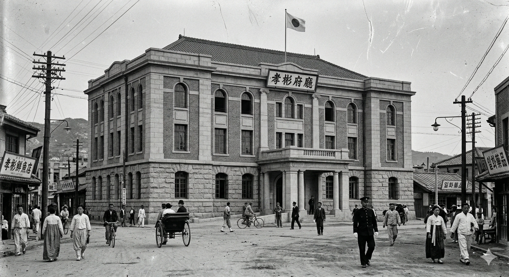
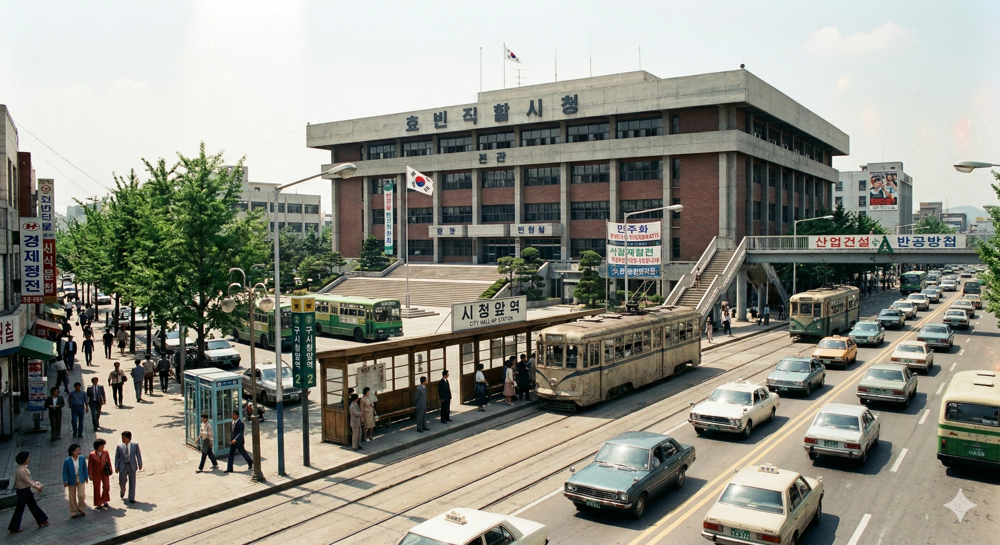
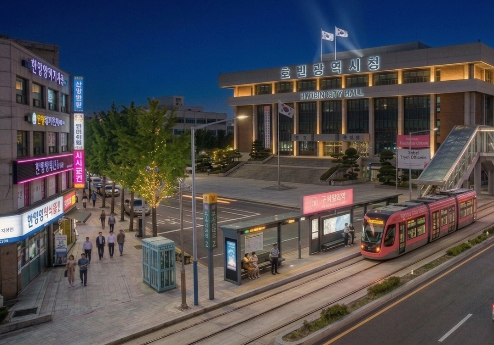

대한민국
광역자치단체
|
||||
| [ 펼치기 · 접기 ] | ||||

| 지방자치 | ||||
|---|---|---|---|---|
| 법조 | ||||
| 교육 | ||||
|
치안
소방
|
||||
|
보건
우정
세무
|
||||
| 평생학습 | ||||
| 기타 국가기관 | ||||
| 시청소속기관 | ||||


- 1. 개요
- 1.1. 마스코트 캐릭터 "한바다"
- 2. 연혁
- 3. 역대 시장
- 4. 조직
- 5. 소속기관
- 6. 이용 가능한 대중교통
- 6.1. 버스
- 6.2. 도시철도
- 6.3. 효빈광역시 시티투어버스 (Hyobin City Tour)
- 6.4. 성지순례 교통망
- 7. 여담
- 7.1. 사건 사고: 혐오와의 전쟁
- 7.2. L-Project (문화 교정)
- 8. 주요 행사
- 9. 청사 시설
- 10. 비판 및 논란
- 10.1. "세금 낭비" 주장
- 10.2. 입사 경쟁률 과열
- 10.3. 흑역사: 공포의 갈매기 "돈불라"
- 11. 관련 문서
- 12. 둘러보기
1. 개요

효빈광역시의 행정을 총괄하는 기관이자 그 기관이 입주한 건물. 본관은 26층까지 있으며, 시장실은 9층에 있다.
효빈광역시 북구 효빈로 79(고송동) 소재. 現 청사는 2003년 12월에 완공된 건물이다. 효빈광역시의회와 쌍둥이 건물로 붙어 있어서, 효빈시내 표지판에는 '시청·시의회'로 표시된다.
과거 청사는 중구 중보로 구시청앞역 근처에 있었으나, 2004년 1월 고송동으로 이전하였다. 구 청사는 현재 보존되어 2026년 리모델링 후 타 기관 청사로 쓰일 예정이다. 청사 이전과 동시에 효빈 도시철도 2호선 고송역도 시청역으로 개명되었다.[3]
옆에 시의회가 있다. 또한 인근에 효빈선거관리위원회, 효빈광역시도시공사, 노동청, 통계청, 효빈문화공사, 효빈덕북우정청, 효빈광역시 상수도사업본부 등이 있어서 효빈의 행정 및 상업 중심지라고 할 수 있다. 도시철도 2, 6호선 시청역이 지하도를 통해 시청과 연결돼 있어서 약간 걷긴 해야 하지만 비 오는 날에도 편하게 갈 수 있어 청사 접근성이 매우 좋은 편이다.
겉보기에는 평범한 광역자치단체의 청사처럼 보이지만, 대한민국, 아니 전 세계에서 가장 독특한 행정 문화를 가진 관공서로 평가받는다. 박효빈 시장 취임 이후 서브컬처와 행정의 결합이라는 전례 없는 실험이 성공을 거두며, 시청 자체가 하나의 거대한 성지(聖地)로 변모했다.
청사 내부에서는 점심시간마다 애니메이션 OST가 흘러나오며, 시장실에는 역대급 피규어 컬렉션이 전시되어 있는 등 일반적인 공무원 조직의 통념을 완전히 깨부순 곳이다.
덕분에 매년 행정안전부 주관 '지자체 혁신 평가'에서 업무 효율성과 '조직 문화' 부문 1위를 놓치지 않고 있다.
1.1. 마스코트 캐릭터 "한바다"

푸른색 계열의 깔끔한 공무원 제복을 입은 귀여운 이미지를 하고 있다. 성실하고 밝은 표정으로 민원인을 맞이하는 모습이 특징이다. (과거 흑역사 시절 마스코트는 후술)
2. 연혁
2.1. 청사 이전 역사
- 1대 청사 (1935 ~ 1952): 중구 조유동2가 281 (현 중구청 자리)

▲ 일장기가 걸려있는 효빈부청 시절의 1대 청사 - 1935년 효빈부 승격과 함께 구 효빈면 사무소 자리에 개청하였다. 당시 유행하던 르네상스풍의 붉은 벽돌과 석조 기반이 혼합된 서양식 근대 건축물로 지어졌다.
- 사진을 자세히 보면 한복과 서양식 정장을 입은 사람들이 혼재되어 있고, 인력거와 자전거가 비포장도로를 달리는 등 근대화 과도기의 풍경이 생생하게 담겨 있다. 지붕 꼭대기에 펄럭이는 일장기와 '효빈부청(孝彬府廳)'이라는 거대한 한자 현판이 시대적 아픔을 보여준다.
뼈아픈 흑역사(...) - 1952년 한국전쟁 중 폭격으로 파괴되어 역사 속으로 사라졌다.
물리치료 완.건물: 살려줘
- 2대 청사 (1953 ~ 2004): 중구 중보로 2 (중보로 2)

▲ '효빈직할시청' 시절 2대 청사
격동의 현대사가 느껴진다.
▲ 청사 이전 후의 모습
7호선 구시청앞역과 신형 트램이 눈에 띈다.- 전쟁 직후 복구 사업의 일환으로 중보로에 신축 이전하였다. 1대 청사와는 대비되는, 철저히 실용성을 강조한 7~80년대 한국 특유의 권위주의적 콘크리트 성냥갑 디자인을 자랑한다.
- 과거 사진을 보면 '효빈직할시청' 현판 아래로 '민주화', '산업건설', '반공방첩' 등 그야말로 대한민국 현대사를 관통하는 살벌한(?) 현수막들이 걸려 있다. 그 앞으로 낡은 크림색 노면전차와 각진 포니 택시들이 굴러다니는 진풍경을 볼 수 있다.
- 현재 사진에서는 동일한 건물이지만 '효빈광역시청' 간판으로 바뀌어 있으며(청사 이전 후에도 역사적 가치를 고려해 건물과 간판을 보존 중이다), 2000년대 이후의 세련된 모습이 돋보인다. 무엇보다 역명이 '시청앞역'에서 '구시청앞역'으로 변경된 것을 폴사인으로 확인할 수 있는데, 이곳이 도시철도 7호선이 지나는 역임을 알 수 있다.
- 도로 중앙에는 칙칙했던 과거의 전차 대신 화사한 핑크색 도색의 최신형 저상 트램이 매끄럽게 달리고 있으며, 우측 도로에는 효빈시 특유의 도색(#37B484)을 한 지선버스가 힘차게 주행 중이다.
세월의 무상함과 기술의 발전이 동시에 느껴지는 짤(...)
- 3대 청사 (현 청사, 2004 ~ 현재): 북구 효빈로 79 (고송동 79-3)
▲ 수변공원 너머로 보이는 압도적인 스케일의 현재 효빈광역시청 - 도시의 폭발적인 확장과 행정 수요 증가로 인해, 구도심을 떠나 새롭게 개발된 고송신도시로 신축 이전하였다. 2003년 12월에 완공되어 2004년 1월부터 본격적인 업무를 개시했다.
- 위대한 인물 효빈의 이름을 그대로 딴 도시의 위상에 걸맞게, 그 스케일이 타의 추종을 불허한다. 거대한 쌍둥이 빌딩이 상단 스카이브릿지로 연결된 파격적인 형태를 띠고 있으며, 전면이 통유리로 덮인 본격 유리궁전의 끝판왕을 보여준다.
여름에 에어컨 빵빵하게 안 틀면 쪄죽고, 겨울엔 난방비 폭탄 맞기 딱 좋은 구조다(...) - 청사 하단부의 물결무늬 파사드와 거대한 시청 로고가 권위와 현대미를 동시에 뿜어낸다. 다행히 앞마당은 아스팔트 주차장 대신 널찍한 잔디밭과 생태 하천이 흐르는 수변 공원으로 조성해 놓아 시민들의 훌륭한 산책로 및 휴식 공간으로 애용받고 있다. 주변을 둘러싼 초고층 주상복합 아파트들과 어우러져 효빈시의 완벽한 스카이라인을 형성하는 랜드마크로 자리매김했다.
2.2. 민선 4기: 암흑기의 도래와 "잃어버린 10년" (2006 ~ 2007)
효빈광역시 역사상 가장 치욕스럽고 고통스러웠던 시기로, 시민들은 이 시기를 "윤대환의 난(亂)" 혹은 "두청강점기"라고 부른다. 단 1년 4개월의 짧은 재임 기간이었지만, 그가 남긴 상흔은 컸다.
행정 붕괴와 암흑기
- 3표의 비극: 2006년 지방선거에서 보수 후보 윤대환이 진보 표 분산으로 2위를 단 3표 차로 누르고 당선되는 이변 발생.
- 철도 파괴와 버스 독점: 윤대환은 일가 기업인 두청운수의 이익을 위해 5, 6호선 공사를 중단시키고 7호선을 폐지하려 했다. 시민들은 살인적인 요금(타 도시의 5배)을 내며 플라스틱 좌석 버스를 타야 했다.
- 비서관 청부 테러: 비자금 장부를 폭로하려던 비서관 A씨를 조폭을 동원해 테러한 사건. A씨는 중상을 입고도 비리를 폭로했고, 이는 윤대환 탄핵의 결정적 계기가 되었다.
문화적 쇄국과 혐오의 씨앗
윤대환은 "만화는 정신을 썩게 한다"며 모든 문화 행사를 축소했다. 이러한 아버지의 폭력성은 아들 윤재훈에게 그대로 답습되어, 훗날 HAF 난동 사건의 원인이 된다.
2.3. 민선 5기 ~ 7기: 박현만 시정의 '대재건' (2008 ~ 2022)
- 도시 정상화: 2008년 보궐선거로 당선된 박현만(일명 '갓현만') 시장은 취임 즉시 두청운수 면허를 취소하고 철도 공사를 재개했다.
- 광역 교통망 확충: 인근 천주시, 약산시와의 관계 회복 및 환승 할인 도입.
3. 역대 시장
| 대수 | 정당 / 임명 주체 | 이름 | 임기 | 비고 |
|---|---|---|---|---|
| 관선 덕빈북도 효빈부윤 / 시장 (1945 ~ 1981) | ||||
| 초대 | 미군정 | 최동석 | 1945.9.2 ~ 1947.1.18 | |
| 2대 | 미군정 / 제1공화국 | 박영진 | 1947.1.19 ~ 1949.8.14 | |
| 3대 | 제1공화국 | 김성수 | 1949.8.15 ~ 1952.4.30 | 효빈시 승격 |
| 4대 | 제1공화국 | 이종학 | 1952.5.1 ~ 1956.8.10 | 지방자치법 시행. 간선제로 뽑혔으나 재임 중 사퇴. |
| 5대 | 1956.8.11 ~ 1958.1.20 | |||
| 6대 | 제1공화국 | 정만호 | 1958.1.21 ~ 1960.5.15 | |
| 7대 | 허정 과도내각 | 윤태일 | 1960.5.16 ~ 1960.11.30 | |
| 8대 | 민주당 | 오세형 | 1960.12.27 ~ 1961.5.24 | 반짝 민선 시장. 5.16 군사정변으로 면직. |
| 9대 | 국가재건최고회의 | 송재우 | 1961.5.25 ~ 1963.12.31 | |
| 10대 | 제3공화국 | 한기철 | 1964.1.1 ~ 1966.2.28 | |
| 11대 | 제3공화국 | 유진상 | 1966.3.1 ~ 1968.4.15 | |
| 12대 | 제3공화국 | 최승호 | 1968.4.16 ~ 1970.7.20 | 효빈전차 존치 협상을 이끌어냄 |
| 13대 | 제3공화국 | 백인규 | 1970.7.21 ~ 1971.8.10 | |
| 14대 | 제3공화국 | 장태민 | 1971.8.11 ~ 1973.6.30 | |
| 15대 | 제4공화국 | 임창수 | 1973.7.1 ~ 1975.11.15 | |
| 16대 | 제4공화국 | 구본영 | 1975.11.16 ~ 1978.2.20 | |
| 17대 | 제4공화국 | 신재호 | 1978.2.21 ~ 1980.5.31 | 청엽구 신설 (1979) |
| 18대 | 제5공화국 | 박동진 | 1980.6.1 ~ 1981.6.30 | 마지막 덕빈북도 산하 효빈시장 |
| 관선 효빈직할시장 (1981 ~ 1995) | ||||
| 초대 | 전두환 정부 | 권태영 | 1981.7.1 ~ 1983.10.15 | 효빈직할시 승격 |
| 2대 | 전두환 정부 | 신동협 | 1983.10.16 ~ 1985.2.24 | 안천시 편입 및 안천구 신설 |
| 3대 | 전두환 정부 | 백승호 | 1985.2.25 ~ 1986.8.28 | |
| 4대 | 전두환 정부 | 서준영 | 1986.8.29 ~ 1988.2.24 | 정권 교체 후 유임 |
| 5대 | 노태우 정부 | 1988.2.25 ~ 1989.12.27 | ||
| 6대 | 노태우 정부 | 남궁혁 | 1989.12.28 ~ 1991.1.9 | 창전구 신설 |
| 7대 | 노태우 정부 | 황기철 | 1991.1.10 ~ 1991.10.24 | |
| 8대 | 노태우 정부 | 유정식 | 1991.10.25 ~ 1992.5.31 | |
| 9대 | 노태우/김영삼 정부 | 환산채 | 1992.6.1 ~ 1993.12.31 | 국회의원직 사퇴 후 부임 |
| 10대 | 김영삼 정부 | 한광수 | 1994.1.1 ~ 1995.6.30 | 마지막 관선 시장. 효빈광역시 개칭 |
| 민선 효빈광역시장 (1995 ~ 현재) | ||||
| 11대 | 민주당 | 환산채 | 1995.7.1 ~ 1998.6.30 | 초대 민선 시장 |
| 12대 | 새정치국민회의 | 박현만 | 1998.7.1 ~ 2002.6.30 | |
| 13대 | 새천년민주당 | 박현만 | 2002.7.1 ~ 2006.6.30 | |
| 14대 | 한나라당 | 윤대환 | 2006.7.1 ~ 2007.11.30 |
공직선거법 위반으로 인한 당선무효 (뇌물수수 및 강요 협박죄, 선거범죄 및 살인미수, 폭행죄, 금품살포죄 및 모욕죄 등) |
| 15대 | 통합민주당 | 박현만 | 2008.6.4 ~ 2010.6.30 | 2008년 상반기 재보궐 선거 (압승으로 복귀) |
| 16대 | 민주당 | 박현만 | 2010.7.1 ~ 2014.6.30 | |
| 17대 | 새정치민주연합 | 김성민 | 2014.7.1 ~ 2018.6.30 | |
| 18대 | 더불어민주당 | 김성민 | 2018.7.1 ~ 2022.6.30 | 2022년 보궐선거 출마를 위해 사퇴 |
| 19대 | 더불어민주당 | 박효빈 | 2022.7.1 ~ 2026.6.30 | 헌정 사상 최연소 광역단체장 |
| 20대 | 더불어민주당 | 박효빈 | 2026.7.1 ~ 재임 중 | 역대 최고 득표율(76.79%)로 재선 성공 |
4. 조직
행정부시장은 행정안전부 파견, 미래혁신부시장은 주로 시장 인맥이나 내부 승진으로 채워진다.
- 효빈광역시장 (차관급): 선출직 지방정무직.
- 행정부시장 (고공단 가급, 국가직)
- 기획조정실 (고공단 나급)
- 재정혁신담당관 / 예산담당관 / 세정정책담당관 / 세정운영담당관 / 회계재산담당관 / 기획관 / 기획담당관 / 조직담당관 / 법무담당관 / 정보화담당관 / 규제혁신추진단
- 시민안전실 (2~3급)
- 도시균형발전실 (2~3급)
- 도시균형개발과 / 창조도시과 / 도시정비과 / 건설행정과 / 걷기좋은효빈추진단
- 도시계획국 (3급)
- 도시계획과 / 시설계획과 / 도로계획과 / 기술심사과 / 토지정보과
- 건축주택국 (3급)
- 총괄건축기획과 / 건축정책과 / 주택정책과 / 도시디자인과
- 교통국 (3급)
- 공공교통정책과 / 물류정책과 / 도시철도과 / 버스운영과 / 택시운수과
- 문화체육국 (3급)
- 사회복지국 (3급)
- 복지정책과 / 장애인복지과 / 노인복지과
- 여성가족국 (3급)
- 여성가족과 / 출산보육과 / 아동청소년과
- 시민건강국 (3급)
- 건강정책과 / 보건위생과 / 시민방역추진단 / 코로나19예방접종추진단
- 행정자치국 (3급)
- 총무과 / 자치분권과 / 인사과 / 협치행정과 / 통합민원과
- 기획조정실 (고공단 나급)
- 미래혁신부시장 (1급 상당)
- 민생노동정책관 (2급)
- 인권노동정책담당관 / 소상공인지원담당관 / 사회적경제담당관
- 디지털경제혁신실 (2급)
- 경제일자리과 / 투자유치과 / 미래기술혁신과 / 인공지능소프트웨어과 / 금융블록체인과 / 빅데이터통계과
- 산업통상국 (3급)
- 제조혁신과 / 미래에너지산업과 / 첨단의료산업과 / 산업입지과 / 외교통상과 / 남북협력기획단
- 청년산학국 (3급)
- 청년정책과 / 지산학협력과 / 창업벤처과 / 교육협력과
- 관광마이스산업국 (3급)
- 관광진흥과 / 마이스산업과 / 해양레저관광과
- 녹색환경정책실 (2~3급)
- 환경정책과 / 기후대기과 / 자원순환과 / 공원운영과 / 산림녹지과
- 물정책국 (3급)
- 맑은물정책과 / 하천관리과 / 생활수질개선과
- 해양농수산국 (3급)
- 해양수도정책과 / 해운항만과 / 수산정책과 / 수산진흥과 / 농축산유통과
- 홍보담당관실
- 민생노동정책관 (2급)
4.1. 인재 양성 프로그램: '블루 버드 멘토단'
박효빈 시장이 신설한 청년 시정 참여 프로그램. 선발 기준이 특정 분야에 대한 깊은 열정(오타쿠 기질)이다. '탕쿠쿠 홀더 폭행 사건'의 피해자이자 사건을 공론화한 이 주무관이 1기 출신이다.
5. 소속기관
5.1. 자치구/군
5.2. 산하 기관
- 지방공기업: 효빈광역시상수도사업본부, 효빈광역시하수도사업본부
- 효빈문화공단
- 지방출연기관: 효빈경제진흥원, 효빈글로벌도시재단, 효빈디자인재단, 효빈연구원, 효빈광역시사회서비스원, 효빈신용보증재단, 효빈성평등가족과평생교육진흥원, 효빈의료원, 효빈정보산업진흥원, 효빈테크노파크, 효빈산업과학혁신원, 효빈문화회관
- 지방출자기관: (주)HSCO
5.3. 유관 단체
- 효빈약산천주경제자유구역청
- 효빈광역시사회적경제지원센터
- 효빈사회적경제네트워크
- 효빈광역시체육회
6. 이용 가능한 대중교통
6.1. 버스
- 순방향: 25, 123, 232, 291, 522, 3000, 6000, 6666, A01
- 역방향: 52, 213, 322, 821, 252, 3000R, 6000R, 6666R, A01R
6.2. 도시철도
- 효빈 도시철도 2호선, 효빈 도시철도 6호선 시청역 (지하 연결)
6.3. 효빈광역시 시티투어버스 (Hyobin City Tour)
"이 버스는 효빈역을 출발하여 누마즈... 아, 아니 남구 해안도로로 향합니다. 요우소로!"
-- T03 노선 안내방송 (CV. 사이토 슈카)
전국 유일 지자체 공식 이타샤(Itasha) 버스. 슬로건은 "Dream on the Bus". 수익금 전액은 청소년 교통비 무료화 재원으로 사용된다.
- 운영: 시청 기획, 시내버스 'Big 5' 업체(소진, 청엽, 칠채, 입석, 송덕) 컨소시엄 운영.
- 노선(T-Code): T01~T09. 덕후들은 μ's와 Aqours 멤버 수인 9명에서 따왔다고 추측한다.
- 차량: 30대 중 15대가 공식 애니메이션 래핑 차량.
- 러브라이브 선샤인 호: T03(남구 해안도로) 투입.
- 뱅드림 로젤리아 호: T09(야경) 투입. 차내 조명 보라색, BGM 'FIRE BIRD'.
- T10 노선 (MyGO!!!!! 에디션): 일명 타키 짱의 잔소리 버스. 시이나 타키가 래핑되어 있으며, 안내방송(CV. 하야시 코코)으로 승객을 혼낸다(?).
- "하아? 벌써 출발 시간이야. 빨리 타.", "손잡이 잡아. 넘어지면 나만 고생이니까." 등.
6.4. 성지순례 교통망
- 보몽역(1호선): 우에하라 아유무 성지(步夢 - 꿈을 향해 걷다). 포토존 존재.
- 리사역: 엠마 베르데 빵집(맛있는 찰떡) 위치. A씨가 테러하려다 참교육당한 곳. '캐릭터 베이커리 거리' 조성.
- 사능역(3호선): 야마부키 사아야 성지. 생일마다 축하 방송 송출.
- 도변역 & 요우역: 와타나베 요우 성지. 요우소로 동상 건립 추진 중.
7. 여담
- 세상에서 가장 유쾌한 행정기관: 시장 박효빈부터가 희대의 성덕이라 시청 전체가 서브컬처에 절여져 있다. 외부에서는 세금 낭비라 오해하지만, 실제로는 덕후 친화 정책으로 재정 자립도 1위를 찍는 기적의 행정을 보여준다.
- 시장 집무실: 한쪽 벽은 도시 계획도, 반대쪽은 러브라이브, 뱅드림 피규어와 성우 사인으로 도배되어 있다. 시장 명패에는 "요우소로(Yousoro)!"가 적혀있다. 결재 도장 찍을 때 "전속 전진!"을 외친다고 한다.
- 재정 상태: HAF와 굿즈 공장 수익으로 돈이 넘쳐나서 대학 등록금 전액 지원 등 비현실적 복지가 실현되고 있다.
- 업무 효율: "빨리 일 끝내고 성우님 라디오 들어야 한다"는 일념으로 4시 퇴근의 전설을 썼다.
7.1. 사건 사고: 혐오와의 전쟁
- 탕쿠쿠 홀더 폭행 사건: 2023년 김 모 팀장이 부하 직원의 탕쿠쿠 파일을 찢으며 "필리핀 촌놈"이라 비하한 사건. 나비효과로 필리핀 케손시티와 자매결연을 맺고 대박이 났다.
- 윤재훈의 몰락: 2022년 TV 토론회에서 박효빈에게 패드립을 쳤다가 "당신은 악마입니까?"라는 일갈을 듣고 낙선. 이후 필리핀에서 "내가 한국의 왕이다"라고 난동 부리다 추방당해 현재 굿즈 공장에서 인형 눈을 붙이고 있다.
- 야마부키 사아야 대첩: HAF 행사장에서 윤재훈과 A씨가 오오하시 아야카 성우에게 욕설을 했다가, 한국어 패치된 성우에게 경멸당하고 시민들에게 참교육당한 사건.
- 니지동 등신대 테러 미수: 등신대에 오물을 투척하려던 일당을 팬들이 "메카쿠시테(눈 가려)!"를 외치며 막아낸 사건.
7.2. L-Project (문화 교정)
- 성공 사례: 최 씨(전직 비리 검사 → Aqours 입덕 후 갱생), 김 기자(기레기 → Roselia 입덕 후 참된 기자).
- 실패 사례: 윤재훈. 갱생 불가 판정받고 무기한 굿즈 생산 노동 중.
8. 주요 행사
- HAF (효빈 애니메이션 페스티벌): 매년 여름 개최. 도시철도망 전체를 행사장으로 쓰는 도심형 축제. 경제 효과 수조 원.
9. 청사 시설
- 1층 로비 (Hall of Fame): 성우 핸드프린팅 존, 방탄유리 보관.
- 구내식당 (효빈 식당): 매주 수요일 '세계관 데이'. 야마부키 베이커리 빵, 누마즈 덮밥 등 제공. 혼밥존에 스마트폰 거치대 완비.
- 방송 시스템: 시보가 스쿨 아이돌 목소리다. (09시 오하요소로, 18시 Start!! True dreams)
10. 비판 및 논란
10.1. "세금 낭비" 주장
윤재훈 잔존 세력이 주장하나, 재정 공시(수익이 지출의 50배) 한 방에 논파당한다. 시민들은 "응~ 재정 자립도 1위~"라며 무시한다.
10.2. 입사 경쟁률 과열
'덕후들의 꿈의 직장'으로 소문나 경쟁률이 500:1을 돌파했다. 지역 인재 할당제로 진정시키는 중.
10.3. 흑역사: 공포의 갈매기 "돈불라"
"엄마! 저 새가 나 쳐다봐! 무서워!"
민선 4기 윤대환 시절의 마스코트. 돈(Money)을 불리라(Blow)는 뜻이었으나, 시민들은 "돈 내놔라"로 해석했다.
- 디자인: 퀭하고 충혈된 눈, 탁한 노란색의 뾰족한 부리. 한 손에는 '뇌물 주머니' 같은 동전 주머니를 들고 있었다.
- 용도: 주로 세금 고지서, 쓰레기 봉투, 두청운수 버스 시트에 인쇄되어 시민들에게 공포와 불쾌감을 주었다.
- 최후: 박현만 시장 취임 후 전량 폐기/소각되었다. 역사관에 봉인된 인형 하나가 남아있다.